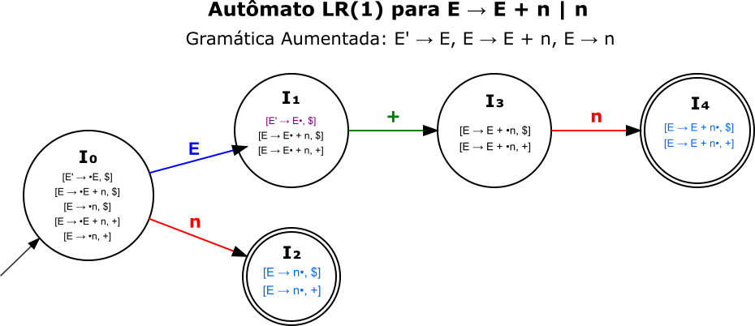

8 Parsers \(LR(1)\): Análise Sintática bottom-up
Watson, o jogo está começando! Se no texto sobre parsers \(LL(1)\) invoquei Sherlock Holmes, agora preciso do Dr. Watson para me ajudar com uma abordagem completamente diferente. Enquanto Holmes (nosso parser \(LL(1)\)) deduz do geral para o específico (top-down), Watson (nosso parser \(LR(1)\)) observa os detalhes e constrói a solução de baixo para cima (bottom-up). É uma mudança fundamental de perspectiva: em vez de prever o que virá, vamos coletar evidências e montar o quebra-cabeça peça por peça.
Parsers \(LR(1)\) representam uma classe de analisadores sintáticos que utilizam a abordagem bottom-up, lendo a entrada da esquerda para a direita e construindo uma derivação mais à direita em ordem reversa. Introduzidos por Donald Knuth em 1965 no trabalho seminal On the Translation of Languages from Left to Right, esses parsers revolucionaram a análise sintática por sua capacidade de reconhecer uma classe muito mais ampla de gramáticas do que os parsers \(LL(1)\).
A notação \(LR(k)\) tem significado preciso:
- \(L\): Left-to-Right scan (varredura da esquerda para a direita);
- \(R\): Rightmost derivation in reverse (derivação mais à direita em ordem reversa);
- \(k\): número de símbolos de lookahead (no \(LR(1)\), apenas 1 símbolo).
Diferentemente dos parsers \(LL(1)\), que não conseguem lidar com recursão à esquerda, os parsers \(LR(1)\) tratam essa característica de forma natural e eficiente. Além disso, embora gramáticas ambíguas gerem conflitos, as ferramentas baseadas em \(LR\) permitem resolvê-los com diretivas de precedência e associatividade, tornando-as muito mais flexíveis.
8.1 bottom-up vs top-down: Uma Mudança de Paradigma
Para entender profundamente os parsers \(LR(1)\), precisamos primeiro compreender a diferença fundamental entre as abordagens top-down e bottom-up.
parser \(LL(1)\) - top-down: a criativa leitora pode imaginar que está tentando montar um quebra-cabeça começando pela imagem da caixa. Você sabe que precisa formar uma árvore, então começa buscando as peças de borda e vai preenchendo os detalhes de cima para baixo.
parser \(LR(1)\) - bottom-up: agora imagine a abordagem oposta: você pega as peças individuais e vai juntando pequenos grupos que fazem sentido. Dois pedaços verdes formam uma folha, três folhas formam um galho, vários galhos formam a copa. Você constrói de baixo para cima até ter a árvore completa.
Essa diferença não é apenas conceitual — ela esconde implicações profundas:
- Poder de reconhecimento: \(LR(1)\) reconhece praticamente todas as gramáticas livres de contexto determinísticas;
- Tratamento de recursão: recursão à esquerda é natural e eficiente;
- Detecção de erros: erros são detectados no momento mais cedo possível;
- Complexidade: a construção das tabelas é mais complexa, mas o parsing é igualmente eficiente.
8.2 O Algoritmo Shift-Reduce
O parser \(LR(1)\) é usa uma pilha, um buffer de entrada e uma tabela de parser como pode ser visto na Figure 8.1.
O coração de um parser \(LR(1)\) é o algoritmo Shift-Reduce, que utiliza uma pilha e um buffer de entrada. O nome vem das duas operações principais:
Shift: consome o próximo símbolo do buffer de entrada e transita para um novo estado, conforme especificado na tabela
ACTION. Por exemplo, se a ação forACTION[estado_atual, simbolo] = sN, o parser empilha o estadoNno topo da sua pilha de estados e avança a entrada.Reduce: substitui um conjunto de símbolos no topo da pilha, que corresponde ao lado direito de uma produção, pelo não-terminal do lado esquerdo da produção. Chamamos este conjunto de símbolos de
handle. Um exemplo custuma clarear as ideias. Considere a gramática a seguir:
1. S' → S
2. S → a A B e
3. A → A b
4. A → b
5. B → dNesta gramática eu já tomei o cuidado de numerar as produções e de incluir uma regra para aumentar a gramática, a regra S' → S. Para ilustrar como o parser usa a tabela ACTION/GOTO, a seguir, a amável leitora encontrará uma tabela parcial, previamente calculada para esta gramática, como exemplo do que veremos mais adiante:
| Estado | ACTION | GOTO | |||||||
|---|---|---|---|---|---|---|---|---|---|
| a | b | d | e | $ | S | A | B | ||
| 0 | s2 | 1 | |||||||
| 1 | acc | ||||||||
| 2 | s4 | 3 | |||||||
| 3 | s6 | s7 | 5 | ||||||
| 4 | r4 | r4 | |||||||
| 5 | s8 | ||||||||
| 6 | r3 | r3 | r3 | ||||||
| 7 | r5 | ||||||||
| 8 | r2 |
8.2.1 Rastreamento Passo a Passo (Versão Canônica)
O algoritmo percorre a string de entrada e aplica as operações de shift e reduce de acordo com as regras da tabela ACTION/GOTO. Para alinhar nossa análise com a implementação computacional padrão, a pilha conterá apenas os números dos estados. A lógica da operação de redução é a parte que requer atenção especial:
- para uma produção
k: A → β, o parser desempilha um número de estados igual ao número de símbolos emβ(ou seja,|β|). - após desempilhar, o estado
sque agora está no topo da pilha representa o ponto na análise imediatamente antes deβser reconhecido. - o parser então consulta
GOTO[s, A]para determinar o próximo estados', que será empilhado.
Para que a criativa leitora entenda, basta seguir o rastreamento para a string abbde$, utilizando uma pilha que armazena apenas estados.
| Passo | Pilha de Estados | Buffer de Entrada | Ação |
|---|---|---|---|
| 1 | [0] |
abbde$ |
ACTION[0,a] = s2. Empilha estado 2. |
| 2 | [0, 2] |
bbde$ |
ACTION[2,b] = s4. Empilha estado 4. |
| 3 | [0, 2, 4] |
bde$ |
ACTION[4,b] = r4 (Reduce por A → b). |b|=1, desempilha 1 estado. |
| 4 | [0, 2] |
bde$ |
Pilha expõe estado 2. GOTO[2,A] = 3. Empilha estado 3. |
| 5 | [0, 2, 3] |
bde$ |
ACTION[3,b] = s6. Empilha estado 6. |
| 6 | [0, 2, 3, 6] |
de$ |
ACTION[6,d] = r3 (Reduce por A → A b). |A b|=2, desempilha 2 estados. |
| 7 | [0, 2] |
de$ |
Pilha expõe estado 2. GOTO[2,A] = 3. Empilha estado 3. |
| 8 | [0, 2, 3] |
de$ |
ACTION[3,d] = s7. Empilha estado 7. |
| 9 | [0, 2, 3, 7] |
e$ |
ACTION[7,e] = r5 (Reduce por B → d). |d|=1, desempilha 1 estado. |
| 10 | [0, 2, 3] |
e$ |
Pilha expõe estado 3. GOTO[3,B] = 5. Empilha estado 5. |
| 11 | [0, 2, 3, 5] |
e$ |
ACTION[5,e] = s8. Empilha estado 8. |
| 12 | [0, 2, 3, 5, 8] |
$ |
ACTION[8,$] = r2 (Reduce por S → a A B e). |a A B e|=4, desempilha 4 estados. |
| 13 | [0] |
$ |
Pilha expõe estado 0. GOTO[0,S] = 1. Empilha estado 1. |
| 14 | [0, 1] |
$ |
ACTION[1,$] = acc. Aceito. |
8.3 Construção da Tabela LR(1): Um Exemplo Guiado
Entender como o parser funciona, é apenas o primeiro estágio. A construção da tabela \(LR(1)\) é um processo algorítmico sistemático, detalhado e que requerer atenção e cuidado da atenta leitora. Para tentar entender este processo vamos construir uma tabela de parsing para uma gramática simples, acompanhando cada etapa em um passo a passo detalhado. Nossa gramática de exemplo terá apenas duas produções:
1. E → E + n
2. E → nO que estamos tentando fazer aqui é construir uma tabela de parsing que possa guiar o parser por meio da gramática. Para isso, precisamos seguir um processo sistemático, que envolve a criação de conjuntos de itens \(LR(1)\), a definição de estados e transições, e finalmente o preenchimento da tabela ACTION/GOTO. Este processo está sintetizado no pseudocódigo a seguir:
ALGORITMO CONSTRUIR_COLECAO_CANONICA_E_TABELA_LR1(G')
// ENTRADA: Uma gramática aumentada G' com símbolo inicial S'
// SAÍDA: As tabelas de parsing LR(1) ACTION e GOTO
// Parte 1: Construção da Coleção Canônica de Itens LR(1)
1. Inicialize C, a coleção de conjuntos de itens, como um conjunto vazio.
2. Calcule I₀ = CLOSURE({[S' → •S, $]}).
3. Adicione I₀ a C.
4. Marque I₀ como "não processado".
5. ENQUANTO houver um conjunto Iᵢ em C marcado como "não processado":
6. Marque Iᵢ como "processado".
7. PARA CADA símbolo gramatical X (terminal ou não-terminal):
8. Calcule Iⱼ = GOTO(Iᵢ, X).
9. SE Iⱼ não for vazio E Iⱼ não estiver em C:
10. Adicione Iⱼ a C.
11. Marque Iⱼ como "não processado".
12. FIM SE
13. FIM PARA
14. FIM ENQUANTO
// Parte 2: Construção das Tabelas ACTION e GOTO a partir da Coleção C
15. PARA CADA conjunto Iᵢ em C (onde i é o número do estado):
16. PARA CADA item no conjunto Iᵢ:
17. // Caso 1: Item de Shift
18. SE o item tem a forma [A → α • t β, a], onde t é um TERMINAL:
19. Calcule Iⱼ = GOTO(Iᵢ, t).
20. Seja j o índice de Iⱼ em C.
21. // Se ACTION[i, t] já estiver preenchido, há um conflito.
22. Defina ACTION[i, t] = "shift j".
23. FIM SE
24. // Caso 2: Item de Reduce
25. SE o item tem a forma [A → α •, a], onde A ≠ S':
26. Seja k o número da produção A → α.
27. // Se ACTION[i, a] já estiver preenchido, há um conflito.
28. Defina ACTION[i, a] = "reduce k".
29. FIM SE
30. // Caso 3: Item de Aceitação
31. SE o item tem a forma [S' → S •, $]:
32. Defina ACTION[i, $] = "accept".
33. FIM SE
34. FIM PARA
35. // Preenchimento da tabela GOTO para o estado i
36. PARA CADA NÃO-TERMINAL B:
37. Calcule Iⱼ = GOTO(Iᵢ, B).
38. Seja j o índice de Iⱼ em C.
39. SE Iⱼ não for vazio:
40. Defina GOTO[i, B] = j.
41. FIM SE
42. FIM PARA
43. FIM PARA
44. // --- Funções Auxiliares ---
45. FUNÇÃO CLOSURE(I):
46. J = I
47. REPETIR
48. PARA CADA item [A → α • B β, a] em J:
49. PARA CADA produção B → γ na gramática G':
50. PARA CADA terminal b em FIRST(βa):
51. Adicione o item [B → •γ, b] a J.
52. FIM PARA
53. FIM PARA
54. FIM PARA
55. ATÉ que nenhum novo item possa ser adicionado a J.
56. RETORNE J.
57. FUNÇÃO GOTO(I, X):
58. Inicialize J como um conjunto vazio.
59. PARA CADA item [A → α • X β, a] em I:
60. Adicione o item [A → α X • β, a] a J.
61. FIM PARA
62. RETORNE CLOSURE(J).Para entender este processo, vamos seguir cada passo com nossa gramática de exemplo, começando por criar uma gramática adequada ao algoritmo que descrevemos no pseudocódigo acima e depois seguimos passo a passo.
8.3.1 Passo 1: Gramática Aumentada
Primeiro, aumentamos a gramática adicionando uma nova produção. Esta produção ajudará a definir o estado de aceitação do parser.
0. E' → E
1. E → E + n
2. E → n8.3.2 Passo 2: Itens \(LR(1)\) e a Operação CLOSURE
Agora que temos a gramática aumentada, criamos o estado inicial do nosso analisador, o conjunto de itens I₀. Para isso, precisamos entender dois conceitos fundamentais: o Item LR(1) e a operação CLOSURE.
Pense em um item LR(1) como um marcador de progresso para o parser. Um item \(LR(1)\) nos dirá três coisas:
- Qual regra estamos tentando reconhecer? (Ex:
E → E + n); - Até onde já avançamos? O ponto (
•) indicará o que já foi visto e o que esperamos ver a seguir; - O que esperamos encontrar depois que a regra for completada? Isto que esperamos encontrar chamamos de lookahead e, em geral, será o símbolo terminal que deverá aparecer na entrada para que a redução da regra seja válida.
Por exemplo, quando encontrarmos o item [E → E • + n, $] ele significará:
- estamos tentando reconhecer a regra
E → E + n; - já reconhecemos um
E; - esperamos ver um
+seguido por umn; - após reconhecermos
E + ne reduzirmos paraE, esperamos que o próximo símbolo na entrada seja o fim da string ($).
A operação CLOSURE, fechamento em inglês, irá garantir que um determinado estado contenha todas as informações sobre todas as regras que poderiam ser iniciadas a partir daquele ponto.
A regra para a construção \(LR(1)\) canônica é precisa: para cada item da forma [A → α • B β, a] em um conjunto, onde B é um não-terminal, devemos adicionar ao conjunto um item [B → • γ, b] para cada produção B → γ. O novo lookahead b será cada símbolo terminal no conjunto FIRST(βa). É este cálculo rigoroso do lookahead que diferencia o \(LR(1)\) do seu primo mais simples, o \(SLR(1)\) que veremos adiante.
8.3.2.1 Construindo I₀
Vamos construir o estado I₀ para nossa gramática aumentada com três regras (E' → E, E → E + n, E → n) aplicando a lógica completa da criação do conjunto de itens e da operação CLOSURE do \(LR(1)\).
1. O Ponto de Partida (O Núcleo de I₀): todo o processo começa com um único item, derivado da primeira regra da gramática aumentada. O lookahead inicial é sempre $, o marcador de fim de entrada. Como nossa primeira regra é E' → E, o ponto está no início da produção e o lookahead é $, logo:
- nosso conjunto inicial será:
{ [E' → •E, $] }. Para enfatizar este conjunto diz que: Estamos no início de tudo. Esperamos encontrar uma estrutura que corresponda a uma Expressão (E), e depois dela, esperamos o fim da entrada ($).
2. Primeira Aplicação da Regra CLOSURE: o algoritmo analisa o item no nosso conjunto:
- O item está no formato
[A → α • B β, a], ondeA = E',α = εa string vazia,B = E,β = εa string vazia, ea = $. Neste caso, o algoritmo vê que o ponto•está antes do não-terminalE. A regraCLOSUREé acionada. - Precisamos adicionar as produções de
E. Para calcular o lookahead dos novos itens, calculamosFIRST(βa)que comoβ = ε, calculamos oFIRST(ε$) = {$}.
Portanto, adicionamos os itens correspondentes às produções de E, com $ como lookahead. Na nossa gramática temos duas produções para E (E → E + n e E → n). Para criar os novos itens, o ponto (•) será sempre colocado no início das produções quando elas forem adicionadas durante a operação CLOSURE. Isso ocorre porque o ponto (•) representa o estado de ainda não começamos a reconhecer esta regra. logo:
[E → •E + n, $];[E → •n, $].
Nosso conjunto de itens I₀ cresceu. Agora temos:
[E' → •E, $];[E → •E + n, $];[E → •n, $].
3. Segunda Aplicação da Regra CLOSURE (A Recursividade): a operação CLOSURE é recursiva. O algoritmo deve reexaminar o conjunto para ver se os novos itens adicionados exigem mais expansões. O procedimento será:
- analisamos o novo item
[E → •E + n, $]; - novamente, o ponto
•está antes do não-terminalE. A regraCLOSUREé acionada novamente. - desta vez, o item está na forma
[A → α • B β, a], na qualA = E,α = ε,B = E,β = + n, ea = $. - calculamos o lookahead para as produções de
E:FIRST(βa), neste caso,FIRST(+ n $) = {+}.
Como o lookahead que encontramos é +, adicionamos às produções de E com este novo lookahead:
[E → •E + n, +];[E → •n, +];
A atenta leitora deve notar que estes novos itens foram adicionados ao mesmo conjunto I₀ que está em construção. A operação CLOSURE continua analisando todos os itens do conjunto, incluindo os recém-adicionados, até que nenhuma nova adição seja possível.
4. Verificação de Estabilidade: o algoritmo continua e analisa os itens recém-adicionados (por exemplo, [E → •E + n, +]). Se aplicarmos a regra CLOSURE novamente, o lookahead calculado será FIRST(+ n +) = {+}. Os itens que seriam gerados ([E → •E + n, +] e [E → •n, +]) já estão no conjunto. Como nenhuma nova informação é adicionada, o processo CLOSURE para. Neste cenário a atenta leitora pode dizer que o conjunto está fechado e estável.
O conjunto estado I₀ completo, que representa o ponto de partida do nosso parser \(LR(1)\), é o conjunto final de itens que calculamos:
[E' → •E, $][E → •E + n, $][E → •n, $][E → •E + n, +][E → •n, +]
Este estado indica que, no início da análise, o parser espera ver uma estrutura E que pode ser seguida pelo fim da entrada ($) ou por um operador +.
8.3.3 Passo 3: A Operação GOTO e a Criação de Estados
Se a operação CLOSURE indica tudo o que é possível em um único estado, a operação GOTO mostra como se mover entre os estados. A operação GOTO irá responder à pergunta: Se estamos no estado I e o próximo símbolo da entrada é X, para qual novo estado de conhecimento nós vamos? Para isso, a operação GOTO(I, X) é um processo de duas etapas:
Avanço do Ponto: primeiro, criamos um novo conjunto de itens pegando todos os itens no estado
Inos quais o ponto•está imediatamente antes do símboloX. Para cada um desses itens, movemos o ponto uma posição para a direita, passando por cima deX. Isso simboliza o consumo, o reconhecimento bem-sucedido do símboloX.Fechamento do Novo Conjunto: em seguida, aplicamos a operação
CLOSUREa este novo conjunto de itens. Isso é fundamental para garantir que o novo estado para o qual chegamos também seja completo e contenha todas as produções que podem ser iniciadas a partir deste novo ponto de progresso.
Vamos aplicar esse processo passo a passo para construir os estados I₁ a I₄ a partir do nosso estado inicial I₀ completo.
Lembrando que o nosso estado I₀ foi definido como: { [E' → •E, $], [E → •E + n, $], [E → •n, $], [E → •E + n, +], [E → •n, +] }
Cálculo de
GOTO(I₀, E)→I₁: estamos tentando responder à pergunta: O que acontece se, a partir do estadoI₀, reconhecermos uma Expressão (E)? Neste caso, teremos:Avanço do Ponto: Procuramos em
I₀por itens com•E. Encontramos três:[E' → •E, $],[E → •E + n, $], e[E → •E + n, +]. Movemos o ponto em todos, criando o núcleo do novo estado:{ [E' → E•, $], [E → E• + n, $], [E → E• + n, +] }Fechamento (CLOSURE): Nos itens
[E → E• + n, $]e[E → E• + n, +], o ponto está antes de um terminal (+), então a operaçãoCLOSUREnão adiciona novos itens. O conjunto está estável.
Este novo conjunto é o nosso Estado
I₁:[E' → E•, $](Item de aceitação)[E → E• + n, $][E → E• + n, +]
Interpretação de
I₁: Nós acabamos de analisar umaExpressão. Se o próximo símbolo for$, a análise termina (aceitação). Se for+, continuaremos a análise.Cálculo de
GOTO(I₀, n)→I₂: agora perguntamos: E se, a partir deI₀, o símbolo que virmos for umn?, teremos:Avanço do Ponto: procuramos em
I₀por itens com•n. Encontramos dois:[E → •n, $]e[E → •n, +]. Movemos o ponto em ambos:{ [E → n•, $], [E → n•, +] }Fechamento (CLOSURE): o ponto está no final da produção em ambos os itens. Nenhuma expansão é necessária.
O conjunto está estável. Este é o nosso Estado
I₂:[E → n•, $](Item de redução)[E → n•, +](Item de redução)
Interpretação de
I₂: Nós acabamos de analisar umn. O parser deve agora reduzirnparaEse o próximo símbolo for$ou+.Cálculo de
GOTO(I₁, +)→I₃: continuamos o processo. O que acontece se estivermos no estadoI₁e virmos um+?Avanço do Ponto: procuramos em
I₁por itens com•+. Encontramos dois:[E → E• + n, $]e[E → E• + n, +]. Movemos o ponto:{[E → E + •n, $], [E → E + •n, +]}Fechamento (CLOSURE): O ponto está antes do terminal
n. Nenhuma expansão é necessária.
O conjunto está estável. Este é o nosso Estado
I₃:[E → E + •n, $][E → E + •n, +]
Interpretação de
I₃: Vimos umaExpressãoseguida de+. Agora, esperamos umnpara completar a regra, e após a redução, o símbolo seguinte poderá ser$ou+.Cálculo de
GOTO(I₃, n)→I₄: finalmente, o que acontece se estivermos emI₃e virmos umn?Avanço do Ponto: Procuramos em
I₃por itens com•n:[E → E + •n, $]e[E → E + •n, +]. Movemos o ponto:{ [E → E + n•, $], [E → E + n•, +] }Fechamento (CLOSURE): O ponto está no final. Nenhuma expansão.
O conjunto está estável. Este é o nosso Estado
I₄:[E → E + n•, $](Item de redução)[E → E + n•, +](Item de redução)
Interpretação de
I₄: “Vimos a sequênciaE + n. O parser deve agora reduzirE + nparaEse o próximo símbolo for$ou+.”
Este processo continua até que nenhum novo estado possa ser criado. A operação GOTO constrói efetivamente o autômato de estados, que é o mapa completo que o parser usará para navegar pela análise da entrada.
8.3.3.1 O Autômato LR(1): A Máquina de Estados por Trás do parser
O processo que acabamos de ver nas seções de CLOSURE e GOTO não é um exercício puramente abstrato. Na verdade, estamos construindo o componente central de nosso parser: um Autômato Finito Determinístico (AFD), também conhecido como máquina de estados finitos. É este autômato que irá guiar todas as decisões de shift do analisador. Para entender isso, a atenta leitora deve fazer a seguinte associação:
Os Estados: cada conjunto de itens \(LR(1)\) que calculamos (\(I_0\), \(I_1\), \(I_2\), etc.) corresponde a um único estado no nosso autômato. Cada estado encapsula todo o conhecimento que o parser tem sobre o progresso da análise sintática até aquele momento. Ou seja, quais regras podem estar sendo reconhecidas e o que se espera ver a seguir. \(I_0\) é, por definição, o estado inicial do autômato.
As Transições: A função \(GOTO(I_i, X) = I_j\) define formalmente as transições entre os estados. Se o autômato está no estado \(I_i\) e o próximo símbolo na entrada, ou no topo da pilha após uma redução, é \(X\), ele se move para o estado \(I_j\). As operações de shift do parser nada mais são do que seguir essas transições com os terminais da entrada.
No nosso exemplo, a operação \(GOTO(I_0, n) = I_2\) significa que há uma transição do estado inicial \(I_0\) para o estado \(I_2\) ao ler o símbolo \(n\). O diagrama de transição que veremos mais adiante é a visualização exata deste autômato.
O parser \(LR(1)\) não é apenas um Autômato Finito Determinístico, ele é um Autômato de Pilha Determinístico (APD). A diferença é fundamental:
- O Autômato Finito: o conjunto de estados \(I\) e transições \(GOTO\) atua como a “unidade de controle” ou o “cérebro” do parser. Ele olha para o estado atual e o próximo símbolo e decide para onde ir.
- A Pilha serve como a memória do parser. Ela armazena o histórico de estados visitados. Sem a pilha, o parser não teria como lembrar o aninhamento de estruturas — por exemplo, quantos parênteses foram abertos e ainda não fechados.
Quando o parser executa uma ação de reduce \(A \rightarrow \beta\), ele desempilha um número de estados correspondente ao tamanho de \(\beta\). O estado que então aparece no topo da pilha revela o contexto em que a regra foi encontrada, permitindo que o parser consulte a tabela GOTO (\(GOTO[estado\_do\_topo, A]\)) para saber qual o próximo estado.
Portanto, um parser \(LR(1)\) é a combinação elegante de um Autômato Finito, que reconhece os padrões locais, com uma pilha, que gerencia a estrutura hierárquica da gramática.
8.3.4 Passo 4: Construindo a Tabela ACTION/GOTO
Depois de termos construído todos os conjuntos de itens (os estados I₀ a I₄), o passo final é traduzir essa informação em uma tabela de decisões. Esta tabela é o verdadeiro cérebro do parser, dizendo-lhe exatamente o que fazer a cada momento. Ela é dividida em duas partes:
ACTION: esta parte da tabela é consultada para símbolos terminais (n,+,$). Ela dita uma de quatro possíveis ações:sN(shift N): empilhe o terminal atual e vá para o estadoN;rK(reduce K): reduza os símbolos no topo da pilha usando a produção de númeroK;acc(accept): a análise foi um sucesso;- célula vazia: indica um erro de sintaxe.
GOTO: esta parte da tabela é consultada para símbolos não-terminais (E). Ela nos diz para qual estado ir após uma ação de reduce. Vamos preencher a tabela linha por linha, analisando cada um dos nossos estados (I₀aI₄) e as transiçõesGOTOque calculamos.
Preenchendo a Linha do Estado 0 (
I₀):- a transição
GOTO(I₀, n) = I₂resulta emACTION[0, n] = s2; - a transição
GOTO(I₀, E) = I₁resulta emGOTO[0, E] = 1.
Estado ACTION GOTO n + $ E 0 s2 1 - a transição
Preenchendo a Linha do Estado 1 (
I₁):
a transição
GOTO(I₁, +) = I₃resulta emACTION[1, +] = s3;o item
[E' → E•, $]indica aceitação no lookahead$⇒ACTION[1, $] = acc.Estado ACTION GOTO n + $ E 1 s3 acc
Preenchendo a Linha do Estado 2 (
I₂):- o estado
I₂é{ [E → n•, $], [E → n•, +] };- ambos são itens de redução para a produção
E → n(produção nº 2);
- ambos são itens de redução para a produção
- o primeiro item, com lookahead
$, gera a açãoACTION[2, $] = r2; - o segundo item, com lookahead
+, gera a açãoACTION[2, +] = r2.
Estado ACTION GOTO n + $ E 2 r2 r2 - o estado
Preenchendo a Linha do Estado 3 (
I₃):- a transição
GOTO(I₃, n) = I₄resulta emACTION[3, n] = s4.
Estado ACTION GOTO n + $ E 3 s4 - a transição
Preenchendo a Linha do Estado 4 (
I₄):- o estado
I₄é{ [E → E + n•, $], [E → E + n•, +] }; - ambos são itens de redução para a produção
E → E + n(produção nº 1); - o primeiro item, com lookahead
$, gera a açãoACTION[4, $] = r1; - o segundo item, com lookahead
+, gera a açãoACTION[4, +] = r1.
Estado ACTION GOTO n + $ E 4 r1 r1 - o estado
Tabela Consolidada: juntando todas as linhas que preenchemos, obtemos a tabela completa e canônica, que guiará o parser de forma inequívoca durante a análise de qualquer string de entrada.
Estado ACTION GOTO n + $ E 0 s2 1 1 s3 acc 2 r2 r2 3 s4 4 r1 r1
Uma vez definidos os estados e as transições, podemos construir o diagrama de transição do nosso autômato \(LR(1)\) como pode ser visto na Figure 8.3.

8.4 Conflitos em Parsers \(LR(1)\): Uma Análise Detalhada
Apesar de seu poder, os parsers \(LR(1)\) podem encontrar situações em que a próxima ação não é única. Esses cenários, chamados de conflitos, são detectados durante a construção da tabela ACTION. Um conflito ocorre quando uma única célula da tabela (ACTION[estado, terminal]) precisa conter mais de uma ação válida. Isso significa que a gramática, como está escrita, é ambígua para o algoritmo \(LR(1)\).
8.4.1 Conflito Shift-Reduce
Esta é a forma mais comum de conflito. Um conflito Shift-Reduce ocorre quando o parser, em um determinado estado e com um determinado símbolo de lookahead, tem uma escolha válida entre empilhar esse símbolo (shift) e reduzir uma regra que já está completa no topo da pilha (reduce).
Causa Raiz: um conflito de shift-reduce é identificado se, em um mesmo estado I, coexistem dois tipos de itens:
- Um item de redução:
[A → α•, a], onde o ponto está no final da produção; - Um item de shift:
[B → β•aγ, b], onde o ponto está antes do mesmo terminalaque é o lookahead do item de redução.
Se o próximo símbolo na entrada for a, o parser não sabe se deve reduzir por A → α ou empilhar a.
8.4.1.1 Análise do Exemplo Clássico: O “dangling else”
O exemplo clássico é a ambiguidade do else em linguagens como C ou Java. Considere esta gramática simplificada:
STMT → if EXPR then STMT
| if EXPR then STMT else STMTAgora, imagine que o parser analisou a entrada if EXPR then STMT e o próximo símbolo no buffer é else. Ele se encontrará em um estado, digamos Ik, que conterá (entre outros) os seguintes itens:
[STMT → if EXPR then STMT •, else][STMT → if EXPR then STMT • else STMT, $]
Vamos analisar a situação quando o lookahead é else:
- O item 1 está completo (
•no final). Ele diz ao parser: “A regraSTMT → if EXPR then STMTjá foi vista. Se o próximo token forelse, uma ação válida é reduzir o que temos na pilha.” Isso implicaria que oif-theninterno é uma declaração completa por si só. - O item 2 tem o ponto antes de
else. Ele diz ao parser: “Se o próximo token forelse, uma ação válida é empilhá-lo (shift) e continuar a análise para formar uma declaraçãoif-then-else.”
O Conflito: A célula ACTION[Ik, else] precisa conter tanto uma ação de reduce (baseada no item 1) quanto uma de shift (baseada no item 2). O parser está paralisado: o else pertence ao if mais interno (shift) ou o if interno já acabou (reduce)?
8.4.2 Conflito reduce-Reduce
Este conflito é menos comum, mas geralmente indica um problema mais sério na gramática.
Definição: Ocorre quando o parser, em um mesmo estado e para o mesmo símbolo de lookahead, encontra duas ou mais regras completas diferentes que poderiam ser reduzidas.
Causa Raiz: Um conflito de reduce-reduce é identificado se, em um mesmo estado I, existem dois ou mais itens de redução distintos que compartilham o mesmo símbolo de lookahead.
[A → α•, a][B → β•, a]
Se o próximo símbolo na entrada for a, o parser não sabe se deve reduzir usando a regra A → α ou a regra B → β.
8.4.2.1 Análise do Exemplo
Considere uma gramática ambígua onde uma expressão pode ser tanto um comando quanto um valor:
S → C | V
C → id
V → idApós o parser ler um id, ele chegará a um estado Ik. A operação CLOSURE fará com que este estado contenha ambos os itens completos (supondo que o lookahead seja $, por exemplo):
[C → id•, $][V → id•, $]
O Conflito: Quando o parser estiver no estado Ik e o lookahead for $, ele terá duas opções de redução:
- O item 1 diz: “Reduza usando a regra
C → id”. - O item 2 diz: “Reduza usando a regra
V → id”.
A célula ACTION[Ik, $] precisa conter duas ações de reduce diferentes. Isso é impossível. A gramática, como definida, não fornece contexto suficiente para o parser saber se id deveria ser um Comando ou um Valor.
8.4.3 Resolução de Conflitos
Quando conflitos surgem durante a construção da tabela ACTION, precisamos estabelecer regras de decisão manuais. A resolução envolve três etapas: identificação, análise e aplicação de uma estratégia de resolução.
8.4.3.1 Identificação de Conflitos na Construção da Tabela
Durante a construção da tabela ACTION, um conflito ocorre quando tentamos preencher uma célula que já possui uma ação. Por exemplo:
- Conflito shift-Reduce: A célula
ACTION[i, a]precisa conter tantos_jquantor_k - Conflito reduce-Reduce: A célula
ACTION[i, a]precisa conterr_ker_mondek ≠ m
8.4.3.2 Estratégias Manuais de Resolução
Preferência por shift (Estratégia Padrão): quando há um conflito shift-reduce, geralmente preferimos o shift. Esta estratégia resolve naturalmente o problema clássico do “dangling else”, o
elsesempre se associa aoifmais próximo.Ordenação por Precedência: atribuímos níveis de precedência aos operadores e regras:
- Operadores de multiplicação/divisão: precedência \(2\);
- Operadores de adição/subtração: precedência \(1\);
- Em conflito, escolhemos a ação com maior precedência.
- Associatividade: para operadores de mesma precedência:
- Associatividade à esquerda: preferir reduce;
- Associatividade à direita: preferir shift.
- Resolução por Análise de Contexto: examine os itens \(LR(1)\) que causam o conflito. Se um item tem lookahead mais específico ou representa uma derivação mais provável sintaticamente, priorize-o.
8.4.3.3 Exemplo Prático: Resolvendo o “Dangling Else”
Considere o estado com conflito:
- Item 1:
[STMT → if EXPR then STMT •, else](sugere reduce); - Item 2:
[STMT → if EXPR then STMT • else STMT, $](sugere shift);
Resolução Manual: marcamos na tabela que, para ACTION[estado, else], sempre escolhemos shift. Isso garante que o else se associe ao if mais interno.
8.5 Implementação do LR(1)em Python
A seguir, uma implementação completa de um parser \(LR(1)\) com resolução de conflitos:
from typing import List, Tuple, Dict, Set, Optional
from dataclasses import dataclass
from collections import defaultdict
@dataclass(frozen=True)
class LR1Item:
"""Representa um item LR(1): [A → α•β, a]"""
lhs: str # Lado esquerdo da produção
before_dot: tuple # Símbolos antes do ponto
after_dot: tuple # Símbolos após o ponto
lookahead: str # Símbolo de lookahead
def __str__(self):
before = ' '.join(self.before_dot) if self.before_dot else ''
after = ' '.join(self.after_dot) if self.after_dot else ''
return f"[{self.lhs} → {before}•{after}, {self.lookahead}]"
@dataclass
class Production:
"""Representa uma produção da gramática"""
lhs: str
rhs: tuple
class LR1Parser:
def __init__(self):
self.grammar = {}
self.terminals = set()
self.nonterminals = set()
self.start_symbol = None
self.original_start = None
self.productions = []
self.first_sets = {}
self.states = []
self.action_table = {}
self.goto_table = {}
def add_production(self, lhs: str, rhs: List[str]):
"""Adiciona uma produção à gramática"""
if lhs not in self.grammar:
self.grammar[lhs] = []
rhs_tuple = tuple(rhs)
self.grammar[lhs].append(rhs_tuple)
self.productions.append(Production(lhs, rhs_tuple))
self.nonterminals.add(lhs)
for symbol in rhs:
if symbol not in self.grammar:
self.terminals.add(symbol)
if not self.start_symbol:
self.start_symbol = lhs
self.original_start = lhs
def augment_grammar(self):
"""Aumenta a gramática com S' → S"""
if self.original_start is None:
raise ValueError("Grammar not set")
new_start = self.original_start + "'"
self.add_production(new_start, [self.original_start])
self.start_symbol = new_start
def compute_first(self):
"""Calcula os conjuntos FIRST para todos os não-terminais de forma iterativa"""
self.first_sets = {nt: set() for nt in self.nonterminals}
changed = True
while changed:
changed = False
for nt in self.nonterminals:
old_size = len(self.first_sets[nt])
for rhs in self.grammar.get(nt, []):
if not rhs: # Produção vazia
self.first_sets[nt].add('ε')
continue
# Para cada símbolo da produção
all_have_epsilon = True
for sym in rhs:
if sym in self.terminals:
self.first_sets[nt].add(sym)
all_have_epsilon = False
break
else: # É não-terminal
# Adiciona FIRST(sym) - {ε}
self.first_sets[nt].update(self.first_sets[sym] - {'ε'})
if 'ε' not in self.first_sets[sym]:
all_have_epsilon = False
break
# Se todos os símbolos derivam ε, adiciona ε
if all_have_epsilon:
self.first_sets[nt].add('ε')
# Verifica se houve mudança
if len(self.first_sets[nt]) > old_size:
changed = True
def calculate_first(self, symbols: tuple) -> Set[str]:
"""Calcula o conjunto FIRST para uma sequência de símbolos"""
if not symbols:
return {'ε'}
first = set()
for sym in symbols:
if sym in self.terminals:
first.add(sym)
break
else: # É não-terminal
first.update(self.first_sets[sym] - {'ε'})
if 'ε' not in self.first_sets[sym]:
break
else:
# Todos os símbolos derivam ε
first.add('ε')
return first
def closure(self, items: Set[LR1Item]) -> Set[LR1Item]:
"""Calcula o fechamento de um conjunto de itens LR(1)"""
closure_set = set(items)
changed = True
while changed:
changed = False
new_items = set()
for item in list(closure_set):
# Se não há símbolos após o ponto, continue
if not item.after_dot:
continue
next_symbol = item.after_dot[0]
# Se o próximo símbolo não é não-terminal, continue
if next_symbol not in self.nonterminals:
continue
# Calcula β (resto após o símbolo)
beta = item.after_dot[1:]
# Calcula FIRST(βa)
beta_a = beta + (item.lookahead,)
lookaheads = self.calculate_first(beta_a)
# Para cada produção do não-terminal
for production in self.grammar.get(next_symbol, []):
# Para cada lookahead em FIRST(βa)
for la in lookaheads:
# O marcador 'ε' nunca é um lookahead real.
# A lógica de calculate_first já garante que o lookahead correto (item.lookahead)
# foi incluído no conjunto 'lookaheads' se 'beta' era anulável.
if la == 'ε':
continue
new_item = LR1Item(
lhs=next_symbol,
before_dot=(),
after_dot=production,
lookahead=la
)
if new_item not in closure_set:
new_items.add(new_item)
changed = True
closure_set.update(new_items)
return closure_set
def goto(self, items: Set[LR1Item], symbol: str) -> Set[LR1Item]:
"""Calcula GOTO(items, symbol)"""
goto_set = set()
for item in items:
if item.after_dot and item.after_dot[0] == symbol:
new_item = LR1Item(
lhs=item.lhs,
before_dot=item.before_dot + (symbol,),
after_dot=item.after_dot[1:],
lookahead=item.lookahead
)
goto_set.add(new_item)
if not goto_set:
return set()
return self.closure(goto_set)
def build_states(self):
"""Constrói todos os estados do autômato LR(1)"""
self.compute_first()
self.terminals.add('$')
# Estado inicial: I₀ = CLOSURE({[S' → •S, $]})
augmented_prod = self.grammar[self.start_symbol][0]
start_item = LR1Item(
lhs=self.start_symbol,
before_dot=(),
after_dot=augmented_prod,
lookahead='$'
)
initial_state = self.closure({start_item})
self.states = [initial_state]
# Constrói os demais estados usando GOTO
i = 0
while i < len(self.states):
current_state = self.states[i]
# Encontra todos os símbolos possíveis após o ponto
symbols = set()
for item in current_state:
if item.after_dot:
symbols.add(item.after_dot[0])
# Cria novos estados via GOTO
for symbol in symbols:
new_state = self.goto(current_state, symbol)
if new_state and new_state not in self.states:
self.states.append(new_state)
i += 1
def build_parsing_table(self):
"""Constrói a tabela ACTION/GOTO seguindo o algoritmo LR(1) canônico"""
conflicts = []
for i, state in enumerate(self.states):
# Para cada item no estado
for item in state:
if item.after_dot:
# Item da forma [A → α•aβ, b] onde 'a' é terminal
symbol = item.after_dot[0]
if symbol in self.terminals:
goto_state = self.goto(state, symbol)
if goto_state in self.states:
j = self.states.index(goto_state)
key = (i, symbol)
if key in self.action_table:
existing = self.action_table[key]
if existing[0] == 'reduce':
conflicts.append(f"Conflito S/R em estado {i}, símbolo '{symbol}': preferindo shift")
self.action_table[key] = ('shift', j)
else:
self.action_table[key] = ('shift', j)
else:
# Item da forma [A → α•, a] - item de redução
if (item.lhs == self.start_symbol and
item.before_dot == (self.original_start,) and
item.lookahead == '$'):
# Accept: [S' → S•, $]
key = (i, '$')
self.action_table[key] = ('accept', None)
else:
# Reduce: encontra o índice da produção
for prod_idx, prod in enumerate(self.productions):
if (prod.lhs == item.lhs and
prod.rhs == item.before_dot):
key = (i, item.lookahead)
action = ('reduce', prod_idx)
if key in self.action_table:
existing = self.action_table[key]
if existing[0] == 'shift':
conflicts.append(f"Conflito S/R em estado {i}, símbolo '{item.lookahead}': mantendo shift")
continue
elif existing[0] == 'reduce':
conflicts.append(f"Conflito R/R em estado {i}, símbolo '{item.lookahead}': mantendo primeira redução")
continue
self.action_table[key] = action
break
# Preenche GOTO para não-terminais
for symbol in self.nonterminals:
goto_state = self.goto(state, symbol)
if goto_state in self.states:
j = self.states.index(goto_state)
self.goto_table[(i, symbol)] = j
return conflicts
def print_states(self):
"""Imprime todos os estados construídos"""
for i, state in enumerate(self.states):
print(f"\nEstado I{i}:")
for item in sorted(state, key=lambda x: (x.lhs, x.before_dot, x.after_dot, x.lookahead)):
print(f" {item}")
def parse(self, input_tokens: List[str]) -> bool:
"""Analisa uma string de entrada usando a tabela construída"""
stack = [0] # Pilha de estados
symbols = [] # Pilha de símbolos para debug
input_tokens = input_tokens.copy()
input_tokens.append('$')
i = 0
print(f"{'Passo':<6} {'Pilha':<20} {'Entrada':<15} {'Ação':<30}")
print("-" * 75)
step = 1
while True:
state = stack[-1]
token = input_tokens[i]
action = self.action_table.get((state, token))
if action is None:
print(f"Erro: sem ação para estado {state} e token '{token}'")
return False
stack_str = str(stack)
input_str = ' '.join(input_tokens[i:])
if action[0] == 'shift':
action_str = f"shift para estado {action[1]}"
print(f"{step:<6} {stack_str:<20} {input_str:<15} {action_str:<30}")
stack.append(action[1])
symbols.append(token)
i += 1
elif action[0] == 'reduce':
prod_idx = action[1]
prod = self.productions[prod_idx]
rhs_str = ' '.join(prod.rhs) if prod.rhs else 'ε'
prod_str = f"{prod.lhs} → {rhs_str}"
action_str = f"reduce por {prod_str}"
print(f"{step:<6} {stack_str:<20} {input_str:<15} {action_str:<30}")
# Remove estados e símbolos da pilha
for _ in range(len(prod.rhs)):
if symbols:
symbols.pop()
if stack:
stack.pop()
# Adiciona o não-terminal produzido
symbols.append(prod.lhs)
# Consulta GOTO
goto_state = self.goto_table.get((stack[-1], prod.lhs))
if goto_state is None:
print(f"Erro: sem entrada GOTO para estado {stack[-1]} e símbolo {prod.lhs}")
return False
stack.append(goto_state)
elif action[0] == 'accept':
print(f"{step:<6} {stack_str:<20} {input_str:<15} {'Accept!':<30}")
return True
step += 1
if step > 100: # Proteção contra loops infinitos
print("Limite de passos excedido")
return False
return False
# Exemplo de uso
if __name__ == "__main__":
parser = LR1Parser()
# Define a gramática E → E + n | n
parser.add_production('E', ['E', '+', 'n'])
parser.add_production('E', ['n'])
# Aumenta a gramática
parser.augment_grammar()
# Constrói o parser
print("Construindo estados do autômato LR(1)...")
parser.build_states()
print(f"Estados construídos: {len(parser.states)}")
# Imprime todos os estados
parser.print_states()
# Constrói a tabela de parsing
print("\nConstruindo tabela ACTION/GOTO...")
conflicts = parser.build_parsing_table()
if conflicts:
print(f"\nConflitos encontrados: {len(conflicts)}")
for conflict in conflicts:
print(f" - {conflict}")
else:
print("\nNenhum conflito encontrado.")
# Mostra as produções numeradas
print("\nProduções da gramática aumentada:")
for idx, prod in enumerate(parser.productions):
rhs_str = ' '.join(prod.rhs) if prod.rhs else 'ε'
print(f" {idx}: {prod.lhs} → {rhs_str}")
# Testa o parser
print("\n" + "="*75)
print("Analisando 'n + n':")
print("="*75)
result = parser.parse(['n', '+', 'n'])
print(f"\nResultado: {'Aceito' if result else 'Rejeitado'}")
print("\n" + "="*75)
print("Analisando 'n + n + n':")
print("="*75)
result = parser.parse(['n', '+', 'n', '+', 'n'])
print(f"\nResultado: {'Aceito' if result else 'Rejeitado'}")8.6 Exercícios
8.6.1 Exercício 1: Gramática de Parênteses Balanceados
Desenvolva um parser \(LR(1)\) para reconhecer strings de parênteses balanceados considerando a seguinte gramática:
S → ( S ) S
S → εAumente a gramática adicionando a produção inicial
S' → S.Construa os estados do autômato \(LR(1)\): - Calcule o estado inicial \(I_0\) usando a operação
CLOSURE- Determine todos os estados usando a operaçãoGOTO- Liste todos os itens \(LR(1)\) em cada estadoConstrua a tabela ACTION/GOTO completa
Teste o parser com as seguintes strings: -
(); -(()); -()(); -(()(())).
Dica para começar:
O estado inicial \(I_0\) é derivado do núcleo [S' → •S, $]. Ao aplicar a operação CLOSURE neste item, o lookahead para as produções de S é FIRST(ε$), que resulta em $. Como nenhuma das produções de S começa com um não-terminal, a operação CLOSURE se estabiliza rapidamente. O estado inicial \(I_0\) correto é:
[S' → •S, $]
[S → •( S ) S, $]
[S → •, $]Note que esta gramática tem uma produção vazia (S → ε), o que significa que o item [S → •, $] já é um item de redução. Isso levará a uma ação de reduce no estado \(I_0\) para o lookahead $.
8.6.2 Exercício 2: Expressões Aritméticas com as Quatro Operações
Desenvolva um parser \(LR(1)\) para expressões aritméticas com as quatro operações básicas. A gramática para este exercício é a seguinte:
E → E + T
E → E - T
E → T
T → T * F
T → T / F
T → F
F → ( E )
F → em umTarefas:
Aumente a gramática com
E' → E.Construa pelo menos os 5 primeiros estados do autômato \(LR(1)\): - Estado \(I_0\): estado inicial - Estados resultantes de \(GOTO(I_0, E)\), \(GOTO(I_0, T)\), \(GOTO(I_0, F)\) - Estados resultantes de \(GOTO(I_0, ()\) e \(GOTO(I_0, em um)\)
Identifique possíveis conflitos na gramática: - Esta gramática não possui conflitos se construída corretamente - A hierarquia E → T → F garante a precedência correta dos operadores
Construa a tabela ACTION/GOTO para os estados que você calculou.
Trace a análise da expressão
em um + em um * em umusando sua tabela parcial.
Estrutura do Estado Inicial \(I_0\):
Para construir o estado \(I_0\) canônico, lembre-se de aplicar a regra CLOSURE recursivamente. O processo começa com o núcleo [E' → •E, $], que gera um conjunto base de itens com lookahead $. Em seguida, cada item com um não-terminal após o ponto (•) irá gerar novos itens com lookaheads específicos.
Por exemplo:
- O núcleo
[E' → •E, $]gera o item[E → •E + T, $]. - Este item, por sua vez, ao aplicar
CLOSURE, gera novos itens para as produções deEcom lookaheadFIRST(+ T $) = {+}.
O estado \(I_0\) completo é grande. A seguir, uma amostra representativa de sua estrutura, mostrando os itens gerados por diferentes lookaheads:
/* Itens gerados a partir do lookahead inicial '$' */
[E' → •E, $]
[E → •E + T, $]
[E → •E - T, $]
[E → •T, $]
[T → •T * F, $]
[T → •T / F, $]
[T → •F, $]
[F → •( E ), $]
[F → •em um, $]
/* Itens adicionais gerados a partir de [E → •E + T, $] com lookahead '+' */
[E → •E + T, +]
[E → •E - T, +]
[E → •T, +]
[T → •T * F, +]
[T → •T / F, +]
[T → •F, +]
[F → •( E ), +]
[F → •em um, +]
/* E assim por diante para os lookaheads '-', '*', '/' ... */Observações sobre Precedência:
- A estrutura da gramática implementa naturalmente a precedência: -
*e/têm maior precedência (nível T) -+e-têm menor precedência (nível E) - A associatividade à esquerda é garantida pela recursão à esquerda nas produções
String de Teste Adicional: ( em um + em um ) * em um
Para esta string, observe como os parênteses forçam a avaliação da soma antes da multiplicação, demonstrando que a gramática respeita corretamente a precedência definida pelos parênteses.
8.6.3 Exercício 3: Linguagem de Comandos
Desenvolva um parser \(LR(1)\) para a mini-linguagem de comandos a seguir:
PROG → CMDS
CMDS → CMDS CMD | CMD
CMD → if EXPR then CMD else CMD
| if EXPR then CMD
| while EXPR do CMD
| begin CMDS end
| assign id = EXPR
EXPR → EXPR < EXPR | EXPR + EXPR | id | em umTarefas:
- Identifique o conflito Shift-Reduce causado pelo “dangling else”
- Resolva o conflito dando preferência ao shift ;
- Construa os primeiros estados do autômato \(LR(1)\).
Dica para o Estado Inicial (I₀):
Assim como no exercício anterior, o estado I₀ será grande devido à propagação de lookaheads. O processo começa com [PROG → •CMDS, $]. A aplicação de CLOSURE neste item irá gerar itens para as produções de CMDS com lookahead $.
Por sua vez, um item como [CMDS → •CMDS CMD, $] irá gerar novos itens para CMDS e CMD com lookaheads derivados de FIRST(CMD $). O conjunto FIRST(CMD) inclui terminais como {if, while, begin, assign}.
Abaixo está uma amostra para ilustrar o conceito, mas a construção completa exigirá aplicar a regra CLOSURE até a estabilização:
/* Itens base com lookahead '$' */
[PROG → •CMDS, $]
[CMDS → •CMDS CMD, $]
[CMDS → •CMD, $]
[CMD → •if EXPR then CMD else CMD, $]
[CMD → •if EXPR then CMD, $]
/* ...e as outras produções de CMD com lookahead '$' */
/* Itens gerados a partir de [CMDS → •CMDS CMD, $],
com lookaheads de FIRST(CMD) = {if, while, begin, assign} */
[CMDS → •CMDS CMD, if]
[CMDS → •CMD, if]
[CMD → •if EXPR then CMD else CMD, if]
/* ...e assim por diante para 'if' e os outros terminais */String de Teste: if x < 5 then begin assign y = x + 1 end
A solução completa requer cuidado com conflitos e decisões sobre precedência e associatividade.